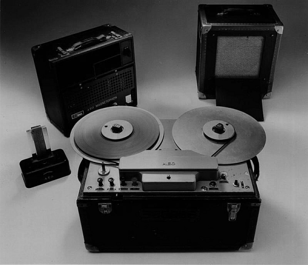
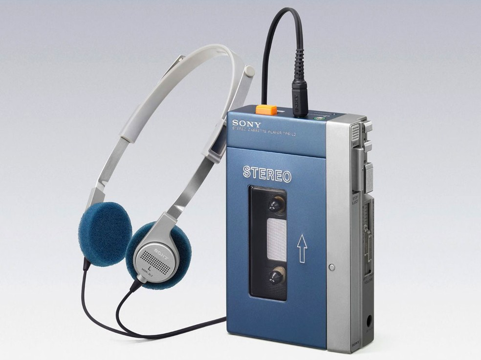

 A história das gravações em fitas magnéticas se origina em meados de 1878 quando Oberlin Smith, engenheiro mecânico, desenvolve uma teoria de registro magnético após uma visita ao laboratório de Edison, entretanto, somente em 1898 Valdemar Poulsen descobrir como realizar esta gravação. Todavia, somente com a expiração da patente de Poulsen em 1918 que houve grandes avanços nesta tecnologia, que teve a Alemanha como líder nos esforços para o melhoramento do registro magnético, que entre 1920 e 1945, teve um grande desenvolvimento por parte da Alemanha, Reino Unido e Japão. Sendo um destes desenvolvimentos o Magnetophon K1 que foi um dos mais reconhecidos precursores dos tocadores de fita cassete.
 Entretanto, somente em 1962 a Phillips Company of Eindhoven, Holanda, conseguiu desenvolver e introduzir um padrão de sucesso em armazenamento de áudio em fita para pessoas comuns dispostas a sacrificar a qualidade do som por gravações baratas, as Compact Cassette, assim como o primeiro tocador de fitas cassettes, o EL 3300, que se tornou um sucesso instantâneo entre os adolescentes quando introduzida em 1964 nos Estados Unidos, sendo no início apenas um modismo, mas depois os jovens usaram fitas virgens como uma forma de compartilhar gravações e criar uma coleção de músicas a um custo muito baixo.
Entretanto, somente em 1962 a Phillips Company of Eindhoven, Holanda, conseguiu desenvolver e introduzir um padrão de sucesso em armazenamento de áudio em fita para pessoas comuns dispostas a sacrificar a qualidade do som por gravações baratas, as Compact Cassette, assim como o primeiro tocador de fitas cassettes, o EL 3300, que se tornou um sucesso instantâneo entre os adolescentes quando introduzida em 1964 nos Estados Unidos, sendo no início apenas um modismo, mas depois os jovens usaram fitas virgens como uma forma de compartilhar gravações e criar uma coleção de músicas a um custo muito baixo.
 No entanto, as fitas cassettes pré-gravadas venderam mal, porque os álbuns ofereciam melhor qualidade de som e geralmente eram mais baratos, sendo assim, elas eram geralmente utilizadas somente para gravação vozes, ditados. Entretanto a tecnologia melhorou muito rapidamente e logo se tornou o método preferido para gravação devido à sua alta qualidade e recursos como redução de ruído e o desenvolvimento de novos formatos de fita. Esse crescimento da adaptação da tecnologia foi auxiliado pelo Walkman da Sony, que pela primeira vez tornou a música portátil para a pessoa média. Os gravadores de bolso também foram inventados na época, nos quais eram possíveis gravar qualquer coisa pressionando um botão no gravador, todavia o sucesso foi curto pois, logo em 1982 os tocadores de CD foram lançados no mercado.